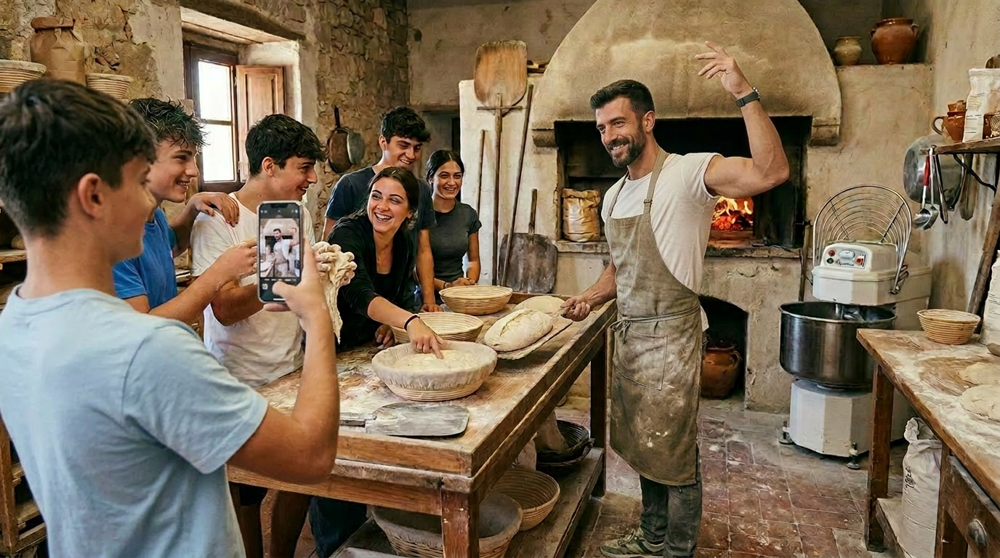

Il Concept
La nostra visione
Chi siamo
Siamo famiglie e professionisti che hanno scelto di mettere radici in Sicilia, in provincia di Ragusa, per rigenerare un antico baglio fortificato come comunità intenzionale stabile, ispirata al Sicilian Slow Living.


Un modello unico nel panorama italiano
Il Baglio San Michele è il progetto pilota del Borgo Ideale: una comunità intenzionale tradizionale, radicata nella fede cristiana e nella cultura siciliana, che trasforma un’antica masseria fortificata del XVI secolo in un insediamento residenziale stabile e autosufficiente per famiglie selezionate, orientato alla coesione familiare, alla trasmissione di valori, all’autonomia alimentare e artigianale e al Sicilian Slow Living.
Questo nucleo, che prevede successive espansioni e la replicabilità in un network di borghi, si distingue nettamente da modelli turistici o temporanei perché punta su residenza permanente, mutualità tra famiglie e radicamento territoriale concreto.
In un panorama dominato da interventi pubblici a matrice turistica o da restauri isolati di lusso, il Baglio San Michele rappresenta un’avanguardia: un presidio di normalità, bellezza e fede in cui la Tradizione non è folklore ma stile di vita concreto e trasmissibile. Questo posizionamento unico lo rende particolarmente attrattivo per famiglie italiane che desiderano non solo una casa in Sicilia, ma un luogo dove radicarsi stabilmente, educare i figli secondo valori solidi e contribuire a un modello replicabile di rigenerazione autentica e generativa.
Il progetto supera così i limiti ricorrenti delle altre esperienze – dipendenza eccessiva da fondi pubblici e turismo stagionale, mancanza di selezione e coesione comunitaria, assenza di un progetto di vita integrale – offrendo un’alternativa concreta, sostenibile e profondamente radicata nel territorio ibleo.
I valori fondanti

Stabilità e continuità
Crediamo in un modello residenziale di lungo periodo, dove le famiglie possano crescere e invecchiare insieme senza essere costrette a spostarsi continuamente.

Relazioni autentiche
La comunità è piccola per scelta: vogliamo che le persone si conoscano davvero, si aiutino e creino legami duraturi.

Tradizione viva
Valorizziamo il patrimonio culturale, artigianale e spirituale siciliano come risorsa viva da trasmettere, non come reperto da museo.

Responsabilità condivisa
Ogni membro contribuisce secondo le proprie possibilità e competenze, in un equilibrio tra libertà individuale e bene comune.

Rispetto della terra
L’autosufficienza alimentare, la cura del suolo e l’uso responsabile delle risorse sono al centro del nostro modello di vita.

Trasmissione intergenerazionale
Ragazzi e anziani sono parte attiva della comunità: i primi imparano, i secondi trasmettono saperi e saggezza.
Questi valori guidano ogni scelta del nostro progetto di vita comune.
Il modello di comunità intenzionale
Una comunità intenzionale non è un semplice condominio o un villaggio turistico. È un gruppo di persone che sceglie consapevolmente di vivere insieme secondo valori condivisi, regole chiare e un progetto di vita comune.
I nostri ambiti

Architettura e cantieri
Restauro filologico del baglio storico, utilizzo di materiali locali e criteri bioclimatici. Ogni intervento è pensato per durare nel tempo e rispettare l’identità del luogo.

Terra e allevamenti
Orto, frutteto, apicoltura e gestione sostenibile del suolo. L’obiettivo è raggiungere una progressiva autosufficienza alimentare e rispettare il ciclo naturale della terra.

Economia e governance
Patti chiari tra i membri, fondi comuni, rendicontazione periodica e regole anti-speculative. La trasparenza economica è alla base della fiducia reciproca.

Artigianato e filiere
Lavoro del legno, della pietra, del ferro, del gesso. Arte musiva. Produzione di miele, marmellate e trasformazioni alimentari. Valorizziamo i mestieri tradizionali e creiamo opportunità di lavoro all’interno della comunità.

Comunità ed educazione
Processi decisionali partecipati, cura intergenerazionale, attività per bambini e anziani. La comunità è un luogo di apprendimento continuo e di trasmissione di valori.

Lavoro da remoto e connettività
Spazi di coworking rurale e connettività di qualità. Il progetto permette di conciliare vita professionale e qualità della vita in un contesto naturale e comunitario.